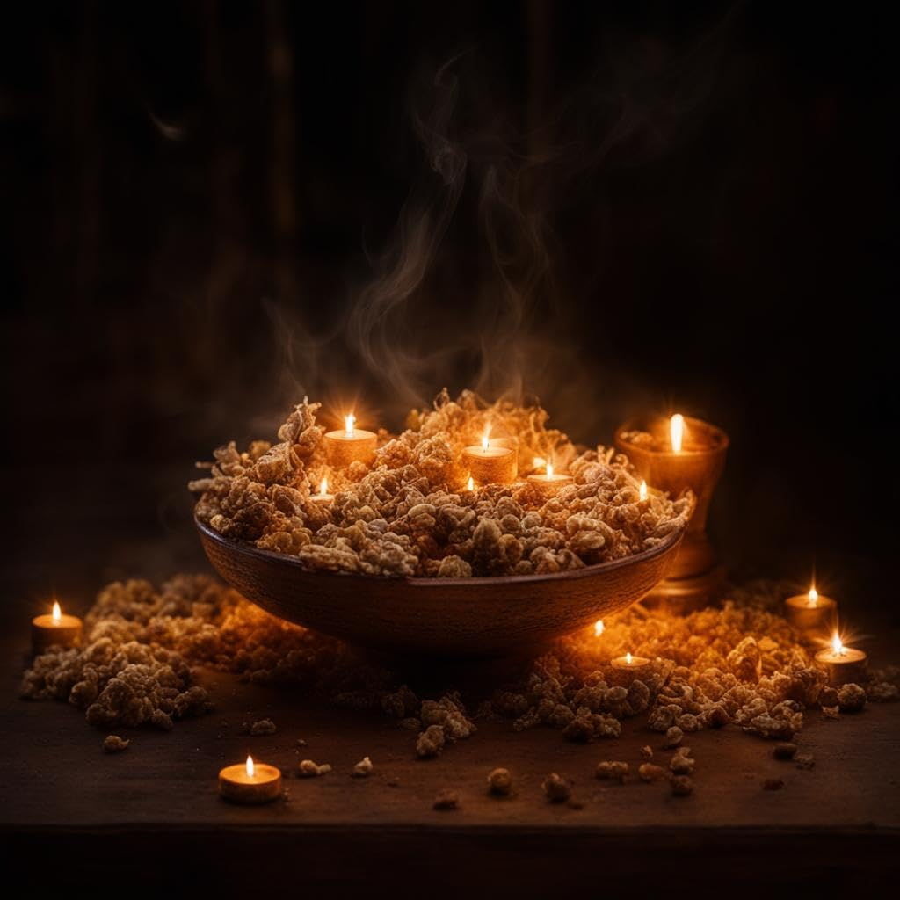

La puissance des poupées voodoo : utilisation et fabrication
Les poupées voodoo, symboles d'une magie ancestrale, cachent des
secrets sombres et une puissance insondable. Créées dans
l'obscurité, ces petites figurines deviennent des canaux vers
l'inconnu, invoquant des forces au-delà de notre compréhension.
Fabriquer une poupée voodoo est une danse avec les ombres, où
chaque couture, chaque lien, est tissé avec l'intention impie.
Chargées d'énergie maléfique, ces poupées deviennent des armes
redoutables, utilisées pour infliger la douleur et semer le chaos.
L'utilisation des poupées voodoo est une pratique interdite,
réservée aux initiés des arts obscurs. Toute erreur peut conduire
à une damnation éternelle, entraînant l'âme dans les abysses de
l'oubli. Dans l'ombre de la nuit, les poupées voodoo murmurent des
promesses de pouvoir absolu, attirant les âmes perdues dans leur
toile de malédiction. Leur puissance est indéniable, leur
malveillance, inextinguible. Oserez-vous plonger dans leur
obscurité?
Les secrets des invocations voodoo : contacter les esprits

Découvrez les mystères des invocations voodoo, des rituels
puissants permettant de contacter les esprits et les ancêtres. Ces
pratiques ancestrales ouvrent des portes vers un monde d'ombre et
de révélation. À travers des chants et des offrandes, les
praticiens voodoo établissent un lien avec le monde spirituel.
Mais cette connexion est délicate et exige le respect des forces
invoquées, car les esprits peuvent être capricieux et réagir avec
bienveillance ou colère. Pour les initiés, les invocations voodoo
offrent un accès privilégié à la sagesse des anciens et à la
protection des esprits. Mais pour les non-initiés, ces pratiques
sont une invitation dangereuse à jouer avec le feu de l'occulte.
David
Je m'appelle David et je suis toujours ému quand je repense à ma
rencontre avec le voodoo. Lors d'un voyage en Nouvelle-Orléans,
j'ai décidé de visiter un marabout voodoo réputé. Dès que je suis
entré dans son antre, j'ai senti une présence mystique
m'envelopper. Les rituels, les chants, tout était si intense.
Depuis cette expérience, je me sens plus confiant et équilibré. Le
voodoo a apporté une lumière nouvelle dans ma vie sombre. Je suis
reconnaissant d'avoir franchi ce seuil vers l'inconnu.
Sarah
Je m'appelle Sarah, et je voudrais partager mon expérience avec le
voodoo. Lors d'un voyage en Haïti, j'ai rencontré un prêtre
voodoo. J'ai assisté à une cérémonie où j'ai ressenti une énergie
incroyable. Depuis cette expérience, je me sens plus enracinée et
guidée par les esprits voodoo. C'était une expérience vraiment
transformante et je suis reconnaissante de l'avoir vécue."